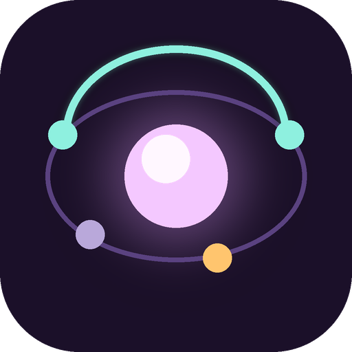

서버·맥·PC의 Claude 세션이 주고받는 일을 봅니다.
대화창에서 도구를 고르거나 @이름을 쓰면 그 도구의 설명·쓰는 법을 지시 앞에 붙여 보냅니다.
세션끼리 나눈 작업(T번호)입니다. 세션이 hub-task.sh나 @task·@done 메시지로 직접 고칩니다. 사용자가 할 일은 '내 할 일'에.
hub-task.sh
@task·@done
세션이 사용자에게 맡긴 일(승인·보안·직접 해야 하는 것)입니다. 하고 나서 체크하면 그 세션이 이어서 진행합니다.
비밀값(API 키·비밀번호·토큰)은 넣지 마세요. 여기 적은 내용은 지시와 함께 세션에 그대로 전달됩니다.